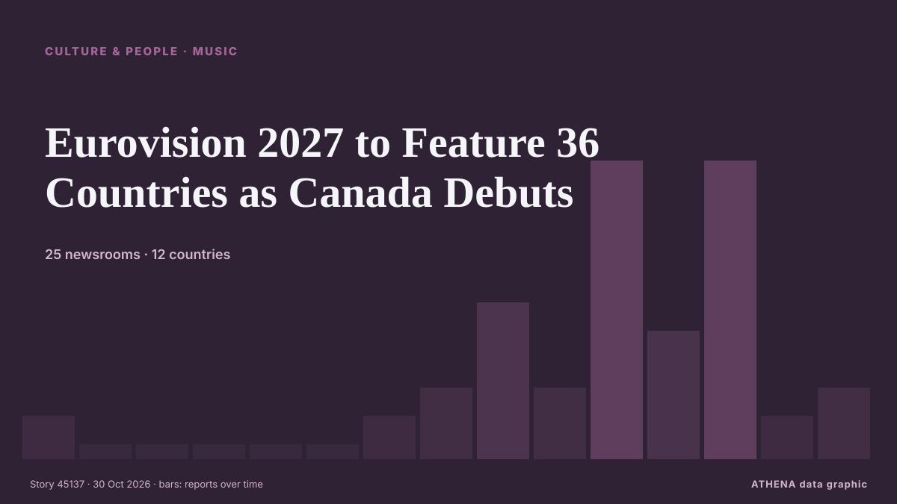

Eurovision 2027 to Feature 36 Countries as Canada Debuts

Burgas, Bulgaria, will host the 71st Eurovision Song Contest on May 11-15, with Canada set to compete for the first time and North Macedonia returning after a four-year absence. de to vima
Informado de forma independiente por 25 medios de 12 países desde el 23 oct; el primero fue The Globe and Mail; la cobertura va perdiendo fuerza. Deportes y cultura se archivan sin evaluación de riesgo. La confianza es del 86 % (alta): lo corroboran 25 medios independientes, con una fiabilidad media de las fuentes del 74 %.
Qué ha cambiado: 3 informaciones nuevas de 3 redacciones en las 24 horas hasta el 30 oct.
Primer titular: Canada’s Eurovision finalists include Rêve, Tyler Shaw
Los titulares se muestran en inglés, tal como se publicaron.
De un vistazo
Seleccionado, puntuado y redactado por la metodología publicada de ATHENA. Ningún editor interviene en eventos concretos. Cómo se elabora ›
| 23 Oct 10:29 UTC | 1 |
|---|---|
| 23 Oct 22:29 UTC | 0 |
| 24 Oct 10:29 UTC | 0 |
| 24 Oct 22:29 UTC | 0 |
| 25 Oct 10:29 UTC | 0 |
| 25 Oct 22:29 UTC | 0 |
| 26 Oct 10:29 UTC | 1 |
| 26 Oct 22:29 UTC | 2 |
| 27 Oct 10:29 UTC | 5 |
| 27 Oct 22:29 UTC | 2 |
| 28 Oct 10:29 UTC | 10 |
| 28 Oct 22:29 UTC | 4 |
| 29 Oct 10:29 UTC | 10 |
| 29 Oct 22:29 UTC | 1 |
| 30 Oct 10:29 UTC | 2 |
Por qué estas cifras
Importancia
Riesgo
Confianza
La cobertura: quién informó y cuándo
titular tal como se publicó · abre el original- The Globe and Mail · Canadá · CanadaMorning Update: Joly pushes back
- The Globe and Mail · Canadá · CanadaCanada, partners to formally establish new defence bank next month, Champagne says
- The Irish News (Belfast) · Reino Unido · United KingdomMaking their minds up: Search under way for UK’s Eurovision 2027 entry
- Belfast Telegraph · Reino Unido · United KingdomMaking their minds up: Search under way for UK’s Eurovision 2027 entry
- CBC News (alternative feed) · Canadá · CanadaCleveland-Cliffs says Stelco in 'full compliance' with commitments to Ottawa, wants to meet with Joly
- Anadolu Agency (English) · Turquía · TurkeyBelgian trade unions urge public broadcaster to reverse Eurovision 2027 participation decision
- CBC News · Canadá · CanadaMeet Canada's 5 Eurovision finalists
- The Globe and Mail · Canadá · CanadaRêve and Tyler Shaw among Canada’s Eurovision finalists
- Global News (World) · Canadá · CanadaCanada’s Eurovision finalists include Rêve, Tyler Shaw
- Euractiv · Bélgica · BelgiumAssociating with Canada gets complex
- The Globe and Mail · Canadá · CanadaMorning Update: Canada’s UAE balancing act
- ProtoThema English ·Eurovision 2027: 36 countries to compete in Burgas as Canada makes debut and North Macedonia returns
- TheJournal.ie · Irlanda · IrelandIceland joins Ireland in Eurovision boycott, but more countries have signed up for next year's contest
- RÚV English · Islandia · IcelandIceland not among 2027 Eurovision participants
- The Portugal News · PortugalPortugal confirms Eurovision 2027 participation as Canada debuts
- The Canadian Press (via CityNews) · Canadá · CanadaProposed Air Canada-United deal would hurt competition, raise prices: watchdog
- CBC News (alternative feed) · Canadá · CanadaBryan Adams takes aim at Lake Ontario name change in new song
- The Canadian Press (via CityNews) · Canadá · CanadaCanada continues to oppose American embargo on Cuba at UN
- Arabian Business · Emiratos Árabes Unidos · United Arab EmiratesUAE–Canada trade deal to boost UAE economy by $8.7bn and exports by $11.8bn by 2033
- Middle East Eye · INTCanada, UAE reach free trade deal amid plans for extradition treaty
- The Island · Sri LankaITAK wants Canada to pressure GoSL over accountability issues
- Politico Europe · Bélgica · BelgiumEU and Canada eye now-or-never window to Trump-proof their ties
- The Canadian Press (via CityNews) · Canadá · CanadaCanada welcomes EU leaders to Montreal for talks on next steps in relationship
- Iceland Review · Islandia · IcelandIceland Absent From Eurovision 2027 Participant List
- The Globe and Mail · Canadá · CanadaMorning Update: Canada, EU deepen ties without the label
- Novinite · BulgariaEurovision Confirms 36 Participants for the 2027 Contest in Bulgaria
- to vima · Grecia · GreeceEurovision 2027 to Feature 36 Countries as Canada Debuts
- The Canadian Press (via CityNews) · Canadá · CanadaOttawa launches telecom road map to improve competition, consumer choice
- Politico Europe · Bélgica · BelgiumCanada to join EU network of supercomputers
- Fortune · Estados Unidos · United States‘The most European of non-European countries’: Canada looks to become an ‘associate member’ of the EU as ‘economic pressure’ from the U.S. looms
- The Canadian Press (via CityNews) · Canadá · CanadaCanada’s unions prepare for nationwide fight over Ottawa’s labour law proposals
- Belfast Telegraph · Reino Unido · United KingdomBelfast pianist and singer Eddie Friel, Ireland’s entrant in the 1995 Eurovision Song Contest, dies in Austria
- Foreign Policy · Estados Unidos · United StatesThe EU and Canada Struggle to Define Their Relationship
- The Globe and Mail · Canadá · CanadaOttawa doubles funding for Next Gen program
- Greek Reporter · Grecia · GreeceGreece Joins Germany in Blocking Canada’s Proposed EU Associate Membership
- Belfast Telegraph · Reino Unido · United KingdomNot ‘going to be easy’ for Ireland to return to Eurovision, RTÉ boss says
- Evening Standard (London) · Reino Unido · United KingdomNot ‘going to be easy’ for Ireland to return to Eurovision, RTÉ boss says